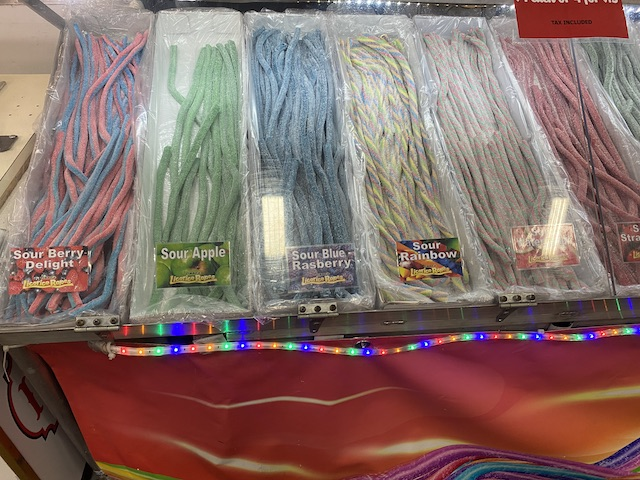
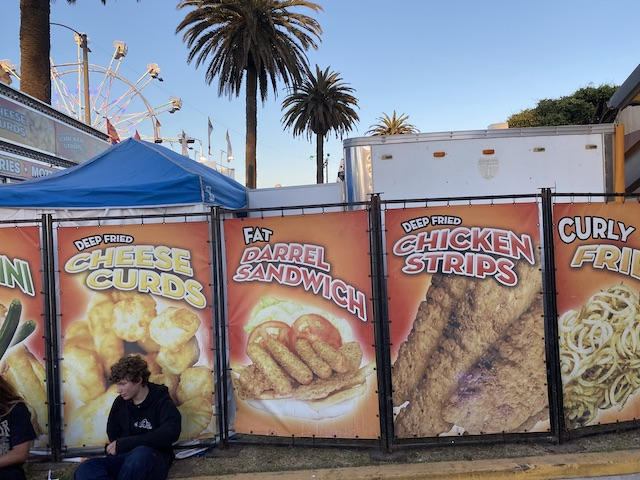
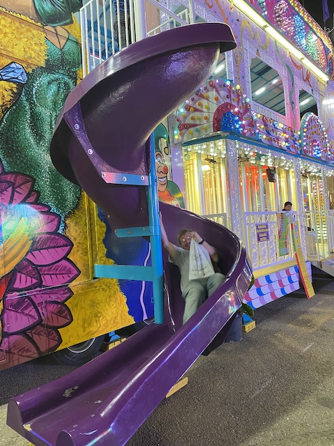

| |
Ventura County Fair 2022
 All right. So we try to do a fair visit every year. But often times (usually in years where I'm in Financial Lockdown), the Fair visit will be skipped. This was supposed to be one of those years. However, I was living back in Ventura at the time (My living situation for 2021 & 2022 was...chaotic to say the least), but by nearly every standard, this should've been a "Skip the Fair" year. However, it still came for a few reasons. #1. Jason really wanted to go since....we were living right there. And....he was desperate for something fun (Excluding the previous two updates, Summer of 2022 SUCKED!!!). #2. Evan was gonna be there. So....F*CK IT!!! Oh, and we did several walks on the beach (That's something fun to do when you're poor as hell and have no budget for anything fun) and got some photos of the Ventura County Fair at night. So be prepared to see some of those throughout the update.
All right. So we try to do a fair visit every year. But often times (usually in years where I'm in Financial Lockdown), the Fair visit will be skipped. This was supposed to be one of those years. However, I was living back in Ventura at the time (My living situation for 2021 & 2022 was...chaotic to say the least), but by nearly every standard, this should've been a "Skip the Fair" year. However, it still came for a few reasons. #1. Jason really wanted to go since....we were living right there. And....he was desperate for something fun (Excluding the previous two updates, Summer of 2022 SUCKED!!!). #2. Evan was gonna be there. So....F*CK IT!!! Oh, and we did several walks on the beach (That's something fun to do when you're poor as hell and have no budget for anything fun) and got some photos of the Ventura County Fair at night. So be prepared to see some of those throughout the update.
All right. It's actually Fair Day now. And....I'm SUPER GLAD they're still running the shuttles. VERY HAPPY about that.
So long-time viewers will know that my final visit to the Ventura County Fair was 11 years ago, and it was NOT a good visit. Hell, the reason that was my last visit was because I just started going to the L.A County Fair and had a much better time there (I was able to travel more since....I had a car then, and more money). So we're finally back. How's the Ventura County Fair holding up after all these years?
 Good news! Most of the problems I complained about during my last Ventura County Fair visit were fixed! HOORAY!!! Now that doesn't mean that the L.A County Fair & Del Mar Fair (San Diego Fair) aren't still much bigger and better. They are. But it felt like the Ventura County Fair was....far more like the fair it was when I was a kid. So that made me very happy! =)
Good news! Most of the problems I complained about during my last Ventura County Fair visit were fixed! HOORAY!!! Now that doesn't mean that the L.A County Fair & Del Mar Fair (San Diego Fair) aren't still much bigger and better. They are. But it felt like the Ventura County Fair was....far more like the fair it was when I was a kid. So that made me very happy! =)
Hello random carnival ride.
In an ultra-shocking twist of events, there actually was a new credit at the Ventura County Fair! And yet, I wound up NOT riding it! WHAT!!? WHY!!!? Money. I'm VERY tight on money, and for as big of a credit whore as I am, I just can't justify spending that money on a kiddy coaster that has NO VALUE AT ALL outside of credit whoring.
All right. We don't have wristbands, so we can't ride as much as we want. And we're still waiting on a friend. So let's just check out some exhibits while we wait for him to arrive.
"You don't want Andrew Jackson on the $20 anymore!? Fine! But why settle for Harriet Tubman when we have ALL THESE OTHER CHOICES TO CHOOSE FROM!!?" =P
Sorry. My condo complex already has a hot tub. Not necessary. =)
"Should I spend the money on a real therapist instead of a massage therapist? Probably would be more responsible. But do you honestly expect responsible decisions from me?"
Mermaids can't dance! They don't have any....what are they called again? Oh right. Feet. ;)
Speaking of The Little Mermaid...

"Tell me boy. What flavor of sugar do you want?"
I know I REALLY enjoyed the hall of Photography in the past, and....I look foreward to seeing what some local photographers have to portray.
Nothing in here blew me away. But it's still clear that there are some good photographers in here (And nobody was dumb enough to label any Disneyland rides as "Ride at the Ventura County Fair" this year).
I see a certain ride on this list that I'm VERY happy to have back! =)
We have our tickets! Time for some fun!
Ooh! I've never seen this ride before at ANY of the fairs I've been to. Surprised there's something new here.
So Moonraker is....a Moonraker. Apparently it's only at a few carnivals. Which explains why I haven't seen it anywhere else. Hey. It looks really cool.
While far from the best carnival ride, it's still a lot of fun. It's sort of like.....a more adult round up. Same basic ride. Except....going vertical instead of just 45 degrees. So you get a lot of the Gs and hangtime common on a lot of carnival rides. It's no Tango, but I'd be happy to ride it again when I have a proper fair visit.

Yeah. It wouldn't be a fair visit without some classic Deep Fried Food.
This years deep fried food and dinner is Deep Fried Cheese Curds. Now....I don't think I've ever had regular cheese curds. But....this is basically just Deep Fried Balls of Cheese. And I do love me some cheese. So naturally, big thumbs up for these! =)
I swear. I would buy some of this olive oil if not for me being poor! Because god damn it! This was good!
OK. Doing a.....less intense ride now. But hey! Funhouses are a fun Fair Staple.
 Crazy Funhouse Photo everyone!
Crazy Funhouse Photo everyone!
This means you, Jason!
"I'm not trying to do a handstand! I really am that clumsy!"
All right. It wouldn't be an Incrediblecoasters update without a roller coaster in it.
OK. Time for another downside. While most of the issues I had from 2011 were fixed, one thing that was NOT fixed was the operations (also, the cost. But everything else got so expensive, that the outrageous prices of 2011 are just standard fare now unfortunately).
These operations are terrible! Move it Crazy Mouse operators! Andale! Andale!
The downside, this isn't a new credit as I rode this model at the San Diego Fair (Beach Walk Photo BTW).
The good news however, is that this is STILL by far one of the best Spinning Mice ever that SPINS LIKE CRAZY!!!
 SO MUCH BETTER THAN POLE POSITON!!!
SO MUCH BETTER THAN POLE POSITON!!!
But for as much as I enjoyed Crazy Mouse, this was BY FAR the star attraction of the park!
I know I complained about it running extremely lame back in 2011. And...I'm happy to report that Zipper is back to its crazy self. Teenage Kevin would be so happy about this. =)
Oh yeah. Rockit is still here. I guess that ride stayed after its debut in 2011. Fun ride, but....we didn't do it since....we had a limited number of tickets. And while its fun, that's far better spent on the Zipper.
Same goes for Windsurf (Probably the oldest and most classic thrill ride at the Ventura County Fair).
I'm not sure what's worse. Stitch dressed up as Pooh or Pooh dressed up as Stitch. Both feel so wrong (Probably gonna go with Stitch dressed as Pooh. But still!).
"HELP!!! WE GOT LOST IN A MIRROR MAZE!!!"
*Sigh* I am not aging well.

Silly little slides always make Fun Houses more fun.
"Uh...why the f*ck are you sliding next to me dude!?"
And that was our visit to the Ventura County Fair in 2022 (closing with a photo of the fair from the Ventura Pier one random night). Was it the best fair ever? No. I'd still much rather go down to the L.A County Fair, or a similar larger fair. But for what it was, I had a really fun time. For being trapped in town, this was a really fun way to spend the day. I got to ride some cool rides, see some cool exhibits, and just have a lot of fun with some friends. Very glad I came tonight.
Home
|